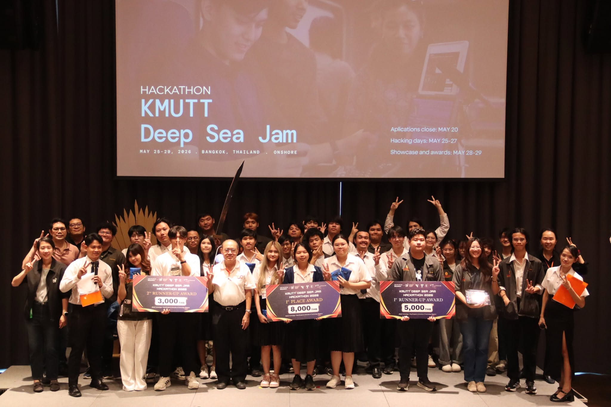
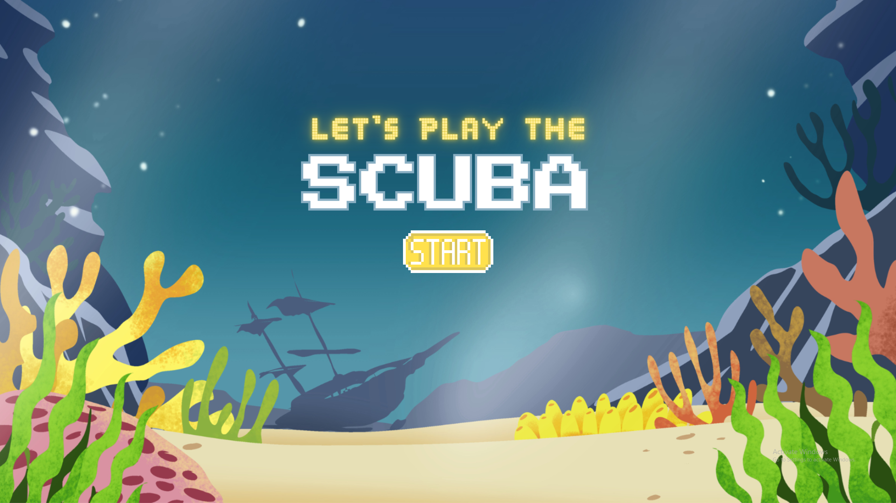
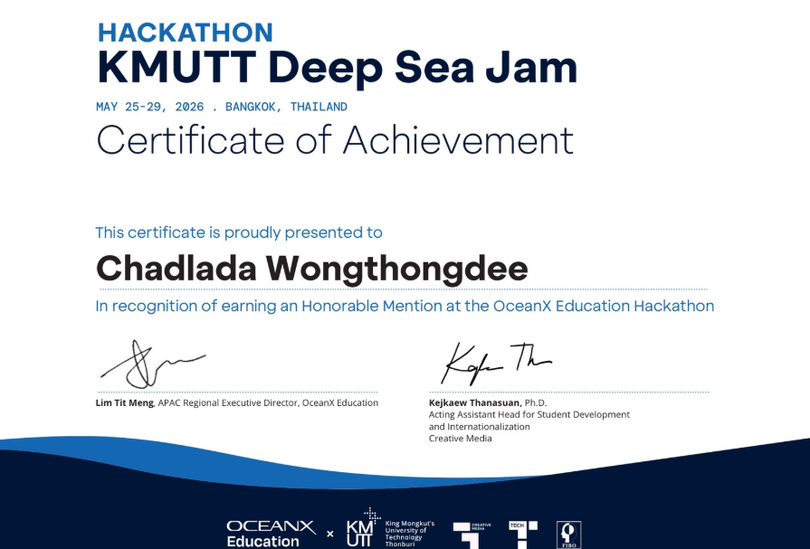

การแข่งขัน OceanX ภายในงาน KMUTT Deep Sea Jam



รับหน้าที่ Team Leader ดูแลการวางแนวคิด บริหารทีม และพัฒนาเกมด้วย Processing ร่วมกับ Touch Sensor ในรูปแบบเกมผจญภัยใต้ทะเล เพื่อส่งเสริมการเรียนรู้เกี่ยวกับระบบนิเวศทางทะเล ได้รับ รางวัลชมเชย จากการแข่งขัน พร้อมพัฒนาทักษะการเขียนโปรแกรม การแก้ปัญหาเฉพาะหน้า และการทำงานเป็นทีม